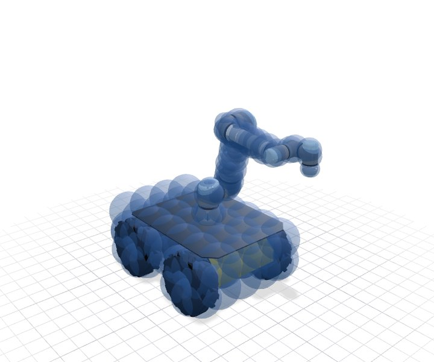

Add a Robot#
In this guide, we add a robot to geodex, a Clearpath Husky A200 with a UR5e. A pipeline turns the robot’s URDF into a VAMP collision model, a mass matrix generated as C++ and a lower bound of that mass matrix for the planner’s heuristic. The pipeline runs once per robot on Linux x86-64, and a regular geodex build compiles its output.

The Husky with a UR5e and the 130 spheres of its VAMP model. The Spheres button hides them.
1. Write a recipe#
A recipe in scripts/robotgen/robots/<name>.json describes the robot to the pipeline. The
Husky’s recipe names its description, its base and drive, the joints the planner moves and the
number of spheres per link.
{
"name": "husky_ur5e",
"description": "Clearpath Husky (A200) with a Universal Robots UR5e on the default top plate, skid-steer differential-drive base",
"vamp_struct": "HuskyUR5e",
"source": {
"xacro_file": "husky_ur5e.urdf.xacro",
"packages": {
"clearpath_platform_description": [
"CLEARPATH_COMMON",
"clearpath_platform_description"
],
"clearpath_control": [
"CLEARPATH_COMMON",
"clearpath_control"
],
"ur_description": [
"UR_DESCRIPTION",
""
]
},
"package": "CLEARPATH_COMMON"
},
"base_link": "base_link",
"base_height": 0.13228,
"drive": "differential",
"planning_joints": [
"arm_0_shoulder_pan_joint",
"arm_0_shoulder_lift_joint",
"arm_0_elbow_joint",
"arm_0_wrist_1_joint",
"arm_0_wrist_2_joint",
"arm_0_wrist_3_joint"
],
"limit_overrides": {},
"end_effector": "arm_0_tool0",
"spherize": {
"branch": 8,
"link_scale": {
"arm_0_base_link_inertia": 4.0,
"arm_0_shoulder_link": 4.0,
"arm_0_upper_arm_link": 3.0,
"arm_0_forearm_link": 2.0,
"arm_0_wrist_1_link": 2.0,
"arm_0_wrist_2_link": 2.0,
"arm_0_wrist_3_link": 2.0,
"front_left_wheel_link": 6.0,
"front_right_wheel_link": 6.0,
"rear_left_wheel_link": 6.0,
"rear_right_wheel_link": 6.0
}
},
"box_covers": [
{
"link": "base_link",
"links": [
"base_link",
"top_plate_link"
],
"cells": [
7,
4,
2
]
}
]
}
Field |
Meaning |
|---|---|
|
The robot’s name in geodex, and the name of the model struct in its VAMP kernel. |
|
The description, an archive listed in |
|
The link that the planar base joints attach to, and its height above the floor. |
|
|
|
The joints the planner moves, in order. Every other joint is fixed. |
|
The link that VAMP attaches held objects to. |
|
The number of spheres per link, and links covered by a grid of spheres instead. |
2. Generate the robot#
For a mobile robot, add husky_ur5e=differential to GEODEX_ROBOT_BASES in
cmake/robots_manifest.cmake. Then register the robot and run the pipeline.
python scripts/robotgen/update_robot_registry.py --name husky_ur5e \
--urdf data/robots/husky_ur5e/husky_ur5e_dynamics.urdf
pixi run --manifest-path scripts/robotgen/pixi.toml scripts/robotgen/generate.sh husky_ur5e
generate.sh writes the robot’s sphere model under data/robots/husky_ur5e/, its VAMP
kernel and sweep data under include/geodex/integration/vamp/robots/generated/, and its mass
matrix and lower bound under src/robots/generated/. It ends by comparing them with
Pinocchio on the original description.
3. Connect the kernel#
Add the robot’s name to cmake/vamp_robots.cmake, and write a header
include/geodex/integration/vamp/robots/<name>.hpp that includes the kernel and its sweep
data and names the kernel’s model.
#include "geodex/integration/vamp/robots/generated/husky_ur5e.hh"
#include "geodex/integration/vamp/robots/generated/husky_ur5e_sweep.hh"
namespace geodex::integration::vamp::detail {
/// @brief VAMP model of this robot.
using husky_ur5e_model = ::vamp::robots::HuskyUR5e;
} // namespace geodex::integration::vamp::detail
The Python class of the robot is a model struct and a bind_mobile or bind_fixed call in
python/src/bind_robots.cpp.
4. Rebuild and list the robots#
After a rebuild, geodex.robots.available() lists the new robot, and it plans like every
other robot.
import geodex
for name in geodex.robots.available():
print(f"{name:>16}: {geodex.vamp.robot_dimension(name)} coordinates")
Full example: examples/robots/catalog.py
#include <cstdio>
#include <string>
#include <geodex/integration/vamp/registry.hpp>
#include <geodex/robots/mass_matrix.hpp>
int main(int argc, char** argv) {
namespace gr = geodex::robots;
namespace gv = geodex::integration::vamp;
for (const auto robot : gr::registered_robots()) {
const std::string name(gr::name(robot));
std::printf("%16s: %d coordinates\n", name.c_str(), gv::robot_dimension(name));
}
return 0;
}
Full example: examples/robots/catalog.cpp
5. Try it: add a fixed-base arm#
A recipe without drive builds a fixed-base arm. The recipe of the Franka FR3 with its
Robotiq 2F-85 is scripts/robotgen/robots/fr3_arm_gripper.json. Write a recipe for your arm
the same way and run steps 2 to 4.
Where to go next#
Whole-Body Planning plans a whole-body motion for a generated robot.
Planning covers the planner’s heuristic, which uses the lower bound.